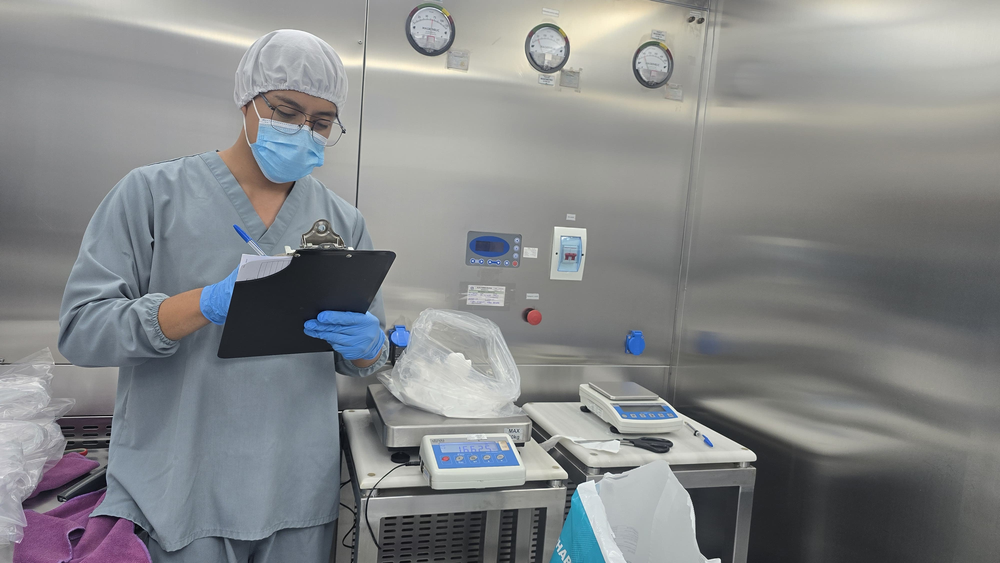

Cuando el Papel Habla por Ti
“Una vez me dijeron: si no está escrito, no existe. Desde entonces, cada firma mía lleva la responsabilidad de todo un proceso.”
En la industria farmacéutica, documentar no es burocracia: es dejar un rastro claro de cada paso que protege al paciente y al producto. Cada hoja, cada bit, cada registro… es parte de una historia que debe ser contada con precisión.